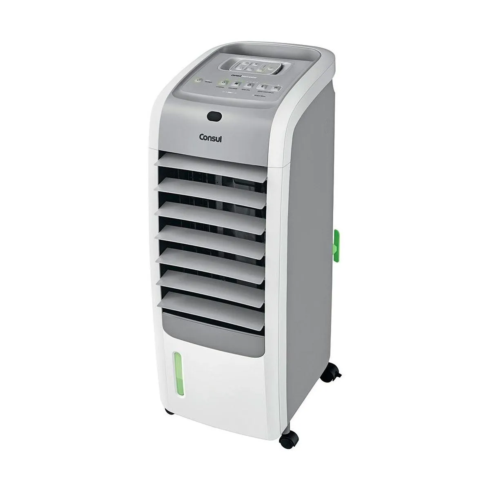

Climatizador Consul Bem-Estar 5 em 1 é o aparelho essencial para dias quentes e frios, pois ele conta com 5 funções que oferecem clima agradável e temperatura ideal, além de recursos que melhoram a qualidade do ar que sua família respira. Para os dias mais frios, ele oferece 3 níveis de aquecimento que deixam o ambiente quentinho. E nos dias quentes, você escolhe entre as funções que umidifica, ventila e refresca o ambiente, reduzindo a sensação térmica e amenizando os desconfortos respiratórios causados pelo ar seco. Ele também protege a sua família com a função Íon, que elimina 99,9% das bactérias do ar e com o sistema de tripla proteção: antimofo, antipoeira e antibactéria. A função Cubo Supergelado foi desenvolvida para deixar sua casa sempre fresca, basta colocar o cubo com água no congelador e depois colocá-lo congelado na gaveta do climatizador. Aviso Limpa Filtro Para manter o ar da sua casa sempre saudável, o climatizador conta com Aviso Limpa Filtro, que indica sempre quando o filtro deve ser retirado para a limpeza. Você pode lavá-lo com água corrente ou com aspirador de pó.